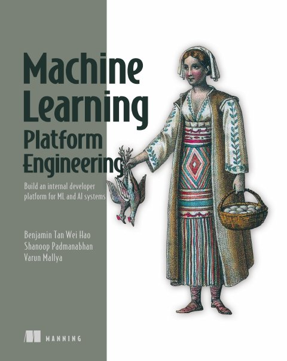

ویراست اول · ۲۰۲۶ · Manning Publications
Machine Learning Platform Engineering
Benjamin Tan Wei Hao و Shanoop Padmanabhan و Varun Mallya
نقطهی شروع کتاب این است که بیشتر پروژههای ML هرگز به production نمیرسند، و مشکل ساختن مدل نیست، deploy قابلاطمینان، مانیتورینگ و نگهداری آن است (ص. xiv). کتاب یک platform ML داخلی را از صفر میسازد: Docker و Kubernetes، MLflow برای tracking و registry، Feast برای feature store، Kubeflow Pipelines برای ارکستراسیون، BentoML برای serving و Evidently و deepchecks برای drift (صص. xiv–xvi). مخاطبش data scientist و مهندس نرمافزاری است که میخواهد از notebook به سیستم production برود؛ Python و مفهومهای پایهی ML کافی است و تجربهی Docker و Kubernetes لازم نیست (ص. xiv).
سه سیستم در طول کتاب ساخته میشود (صص. xiv–xv):
- خود platform، که با یک نقشهی ذهنی از مؤلفههای شمارهدار پیش میرود و هر فصل یکی را روشن میکند.
- دو پروژهی ML سنتی: تشخیص کارت شناسایی با YOLO و recommender فیلم با matrix factorization، از آمادهسازی داده تا مانیتورینگ.
- دستیار مستندات DakkaBot، یک RAG با مدیریت prompt، آزمون معنایی، guardrail و بهینهسازی هزینه.
نویسندگان در Bank Jago و DKatalis در اندونزی و در Continental Automotive روی platform ML و مهندسی ML کار میکنند (صص. xviii–xix). کد کتاب در GitHub زیر سازمان practical-mlops است (ص. xvii).
فصلها
هر درس فصل را بخش به بخش طی میکند: یادداشتها با ارجاع به صفحه، نمودارها، شبیهسازیها، یک مرور و یک خودسنجی. با → و ← بین اسلایدها جابهجا شوید.
- فصل ۱ · صص. ۳–۲۰شروع کار با MLOps و ML engineeringفصل اول نقشهی کل کتاب را میکشد.
- فصل ۲ · صص. ۲۱–۴۱MLOps چیست؟مدل ML معمولاً محصول نهایی سازمان نیست، وسیله است؛ و سختی MLOps از فاصلهی ارزش کسبوکار و نیازمندیها و زیرساخت لازم میآید (p.▶ شبیهسازی
- فصل ۳ · صص. ۴۲–۹۴ساختن برنامه روی Kubernetesاین فصل ستون زیرساختی پلتفرم ML را میسازد، با ابزارهایی که مخصوص ML نیستند ولی هر سیستم ML قابلاطمینان روی آنها میایستد (pp.▶ شبیهسازی
- فصل ۴ · صص. ۹۷–۱۲۳طراحی سیستمهای ML قابلاطمینانبخش دوم کتاب با این پرسش شروع میشود که چطور آزمایشهای ML را قابلردیابی و تکرارپذیر کنیم (p.▶ شبیهسازی
- فصل ۵ · صص. ۱۲۴–۱۴۸ارکستراسیون pipelineهای MLبا MLflow و Feast آزمایشها و featureها مرتب شدند، ولی هماهنگ کردن آموزش و بهروزرسانی feature و inference هنوز دستی است (p.
- فصل ۶ · صص. ۱۴۹–۱۸۰بردن مدلهای ML به productionپس از ارکستراسیون، دو چالش میماند: مدل را چطور قابلاطمینان serve کنیم، و چطور بفهمیم با گذشت زمان هنوز خوب کار میکند (p.⌘ آزمایش
- فصل ۷ · صص. ۱۸۳–۲۳۴تحلیل و آمادهسازی دادهبخش سوم کتاب آموختهها را روی دو پروژهی واقعی پیاده میکند: یک تشخیصدهندهی کارت شناسایی با YOLO و یک recommender فیلم با MovieLens (p.
- فصل ۸ · صص. ۲۳۵–۲۶۰آموزش و اعتبارسنجی مدل: بخش ۱سیستم ML قابلاطمینان فقط مدل دقیق نمیخواهد، فرایند آموزش تکرارپذیر و اعتبارسنجی محکم هم میخواهد (p.
- فصل ۹ · صص. ۲۶۱–۲۹۸آموزش و اعتبارسنجی مدل: بخش ۲آموزش در production زیرساخت میخواهد: مدیریت داده، ردیابی آزمایش و نسخهگذاری مدل (p.
- فصل ۱۰ · صص. ۲۹۹–۳۲۴inference و serving مدلبا pipeline آموزش و اعتبارسنجی آماده، مدل باید بهصورت سرویس در دسترس قرار گیرد (p.
- فصل ۱۱ · صص. ۳۲۵–۳۵۶مانیتورینگ و explainabilityبردن مدل به production فقط گام اول است؛ نگه داشتن کارایی آن به مانیتورینگ و فهم رفتارش نیاز دارد (p.
- فصل ۱۲ · صص. ۳۵۹–۴۰۸طراحی سیستمهای مبتنی بر LLMبخش چهارم کتاب MLOps را به LLM گسترش میدهد، با این ادعا که LLMOps بازسازی نیست، تکامل است: cluster Kubernetes، مانیتورینگ و CI/CD میمانند و چند جزء تازه کنارشان مینشیند (pp.
- فصل ۱۳ · صص. ۴۰۹–۴۵۳طراحی سیستم LLM در productionفصل آخر DakkaBot را از prototype به production میبرد با همان سختگیریای که برای هر سیستم حیاتی لازم است (pp.▶ شبیهسازی
کتاب چطور به هم وصل است
کتاب چهار بخش دارد (صص. xv–xvi):
- بخش ۱، فصلهای ۱ تا ۳، پایه را میگذارد: چرخهی عمر ML، خود MLOps در برابر DevOps، و Docker و Kubernetes و CI/CD و Prometheus.
- بخش ۲، فصلهای ۴ تا ۶، قابلیتهای هستهی platform را میسازد: tracking و registry و feature store، pipelineهای Kubeflow، و serving و drift.
- بخش ۳، فصلهای ۷ تا ۱۱، همه را روی دو پروژهی واقعی اعمال میکند: آمادهسازی داده، آموزش و اعتبارسنجی، serving، و مانیتورینگ و explainability.
- بخش ۴، فصلهای ۱۲ و ۱۳، MLOps را به LLM گسترش میدهد: ساختن یک RAG و سخت کردنش برای production.
flowchart TB
C1["فصل ۱ · شروع کار با MLOps"] --> C2["فصل ۲ · MLOps چیست"] --> C3["فصل ۳ · Kubernetes"]
C3 --> C4["فصل ۴ · MLflow و Feast"]
C3 --> C5["فصل ۵ · pipelineهای Kubeflow"]
C4 --> C6["فصل ۶ · BentoML و drift"]
C5 --> C6
C5 --> C7["فصل ۷ · آمادهسازی داده"] --> C8["فصل ۸ · آموزش و اعتبارسنجی ۱"] --> C9["فصل ۹ · آموزش و اعتبارسنجی ۲"]
C4 --> C9
C9 --> C10["فصل ۱۰ · inference و serving"]
C6 --> C10
C10 --> C11["فصل ۱۱ · مانیتورینگ و explainability"]
C3 --> C12["فصل ۱۲ · سیستمهای LLM"]
C11 --> C12
C12 --> C13["فصل ۱۳ · LLM در production"]فلشها خوانش vault از وابستگی فصلهاست؛ ترتیب و بخشبندی فصلها مال خود کتاب است.
چند رشته در کل کتاب میدوند:
- نقشهی ذهنی platform در فصل ۱ کشیده میشود و هر فصل بعدی با روشن کردن یکی از مؤلفههایش شروع میشود؛ فصل ۱۲ نیمهی LLM را کنارش میگذارد.
- دو فاز آزمایش و production در فصل ۱ تعریف میشود، در فصل ۲ به سطحهای بلوغ MLOps میرسد و در فصلهای ۸ و ۹ به اعتبارسنجی پیش از ترفیع مدل.
- مفهوم drift در فصل ۶ برای دادهی جدولی، در فصل ۱۱ برای تصویر و embedding، و در فصل ۱۳ به شکل ارزیابی معنایی پاسخهای LLM برمیگردد.
- «کد همه چیز است»: pipeline در فصل ۵، Bento در فصل ۱۰، و prompt در فصل ۱۳ همه نسخه و tag و rollback دارند.
شبیهسازیها
مدلهای تعاملی از سازوکارهایی که کتاب شرح میدهد. در درسها هم جاسازی شدهاند؛ پیادهسازیها مال خود vault است.
- فصل ۲حلقهی MLOps و سطحهای بلوغیک مدل را یک سال جلو ببرید، drift تزریق کنید و ببینید در سطح بلوغ ۰ و ۱ و ۲ چقدر طول میکشد تا افت دیده و مدل تازه deploy شود. تصویری از فصل ۲ کتاب Machine Learning Platform Engineering.
- فصل ۳rolling update و rollbackیک Deployment سهreplica را با image سالم یا خراب به نسخهی تازه ببرید، ببینید دو ReplicaSet چطور یکییکی بالا و پایین میروند، rollout خراب کجا میایستد و rollout undo چه میکند. تصویری از فصل ۳ کتاب Machine Learning Platform Engineering.
- فصل ۴point-in-time joinزمان رویداد و TTL را جابهجا کنید و ببینید point-in-time join کدام مقدار feature را برای یک ردیف آموزش برمیدارد، و join سادهی «آخرین مقدار» کجا از آینده نشت میکند. تصویری از فصل ۴ کتاب Machine Learning Platform Engineering.
- فصل ۱۳مسیریابی و cache در برابر هزینهسهم پرسشهای ساده، نرخ hit cache معنایی و شمار پرسش ماهانه را عوض کنید و هزینهی ماهانهی یک مدل گران برای همه را با مسیریابی سهلایه و cache مقایسه کنید. تصویری از فصل ۱۳ کتاب Machine Learning Platform Engineering.
آزمایشها
برنامههای قطعی Python، فقط با کتابخانهی استاندارد. هر کدام را از پوشهی خودش اجرا کنید؛ README هر آزمایش خروجی مورد انتظار را دارد.
| فصل | آزمایش | دستور |
|---|---|---|
| ۶ | اندازهی پنجره و هشدار drift کاذب | python3 drift_window.py |
مفهومهای کلیدی
این ایدهها در فصلها تکرار میشوند؛ هر ردیف فصلهایی را میآورد که بحثشان میکنند. تعریفها خلاصههای vault از توضیحهای کتاباند.
| مفهوم | تعریف | فصلها |
|---|---|---|
| چرخهی عمر ML | دو فاز: آزمایش، از تعریف مسئله تا اعتبارسنجی مدل، و development/staging/production که همان pipeline را خودکار و deploy و پایش میکند. هر مرحله حلقه دارد. | ۱ · ۲ |
| platform ML | مجموعهای از ابزار و زیرساخت خودسرویس که data scientist را از notebook به production میبرد؛ کتاب آن را کمکم و روی Kubeflow میسازد. | ۱ · ۳ · ۱۲ |
| سطح بلوغ MLOps | از فرایند دستی تا pipeline خودکار با CI/CD و retrain خودکار. | ۲ |
| experiment tracking و model registry | ثبت پارامتر، متریک و artifact هر run در MLflow، و نسخه و alias مدلها برای ترفیع و rollback. | ۴ · ۹ · ۱۰ |
| feature store | یک تعریف از feature برای آموزش و serving، با join نقطهدرزمان که از نشت دادهی آینده جلوگیری میکند. | ۴ |
| pipeline و component | گامهای containerشده با ورودی و خروجی تعریفشده که Kubeflow Pipelines به هم وصل و اجرا میکند. | ۵ · ۷ · ۸ |
| data drift | جابهجایی توزیع دادهی ورودی یا رابطهاش با هدف نسبت به دادهی آموزش؛ با آزمون آماری روی ستونها، ویژگیهای تصویر یا factorهای پنهان سنجیده میشود. | ۶ · ۱۱ |
| اعتبارسنجی مدل | بررسی مدل تازه پیش از ترفیع، با «اعتماد کن، ولی وارسی کن». | ۸ · ۹ |
| BentoML Service و runner | API server که درخواست را میگیرد و runnerهایی که inference را در worker خودشان اجرا میکنند؛ Bento بستهی قابلdeploy با tag است. | ۶ · ۱۰ |
| مانیتورینگ پایه و متریک سفارشی | منابع و متریک درخواست برای SLA، بهعلاوهی متریک کسبوکار مثل histogram اطمینان پیشبینی، و هشدار با Alertmanager. | ۳ · ۱۱ |
| explainability | توضیح اینکه مدل چرا تصمیمی گرفته؛ مبتنی بر مدل یا پسینی مثل SHAP و Eigen-CAM. | ۱۱ |
| RAG | جدا کردن بازیابی سند از تولید پاسخ، تا LLM بدون retrain به دانش خصوصی و تازه تکیه کند. | ۱۲ · ۱۳ |
| prompt بهعنوان کد | system prompt منطق کسبوکار است و نسخه، label، آزمون و rollback میخواهد. | ۱۲ · ۱۳ |
| guardrail | لایههای ورودی و خروجی که PII را پاک، نام رقیب را مسدود و hallucination را میگیرند. | ۱۳ |
| اقتصاد token | هزینه به ازای token، نه به ازای server؛ با مسیریابی بین مدلها، cache معنایی و prompt کوتاهتر کنترل میشود. | ۱۲ · ۱۳ |